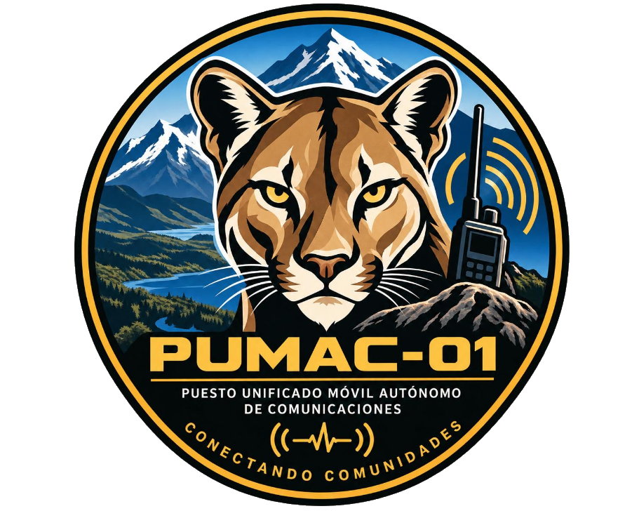
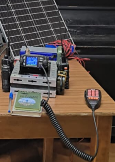

Localidades apartadas
Comunicación para sectores de difícil acceso o con baja cobertura.
Puesto Unificado Móvil Autónomo de Comunicaciones
PUMAC-01 es una estación de comunicaciones portátil, autónoma y de bajo costo, creada por radioaficionados para apoyar a personas, comunidades y equipos desplegados en terreno.
Proyecto impulsado por Ignacio García · CD3IUG

El proyecto
Es un sistema portátil de Comando, Control y Comunicaciones diseñado para ser liviano, de rápido despliegue y utilizable en distintos tipos de terreno.
Opera con baterías y puede complementarse con carga solar. Su objetivo es establecer comunicación entre personal en terreno, otros equipos PUMAC-01 y, según la infraestructura disponible, centros de emergencia, autoridades, centros de salud o familiares.
El prototipo ha sido probado en terreno y cuenta con documentación, manual de operación y capacitación remota para facilitar su implementación.

Cómo funciona
El sistema central puede complementarse con radios portátiles, baterías, panel solar, iluminación y accesorios de apoyo. De esta forma, una persona puede operar como estación base mientras entrega equipos a quienes se encuentran más cerca del punto de interés.
Apoyo en situaciones reales
PUMAC-01 está pensado para apoyar comunicaciones cuando la infraestructura habitual es insuficiente, está interrumpida o simplemente no existe.
Comunicación para sectores de difícil acceso o con baja cobertura.
Capacidad básica de coordinación comunitaria ante contingencias.
Apoyo a equipos desplegados en terreno durante emergencias.
Puente de comunicación cuando otras redes no están disponibles.
Coordinación local y contacto entre personas en zonas afectadas.
Terremotos y otras emergencias que afecten las comunicaciones.
Un propósito mayor
PUMAC-01 nace del espíritu de colaboración y servicio de la radioafición: usar conocimiento técnico para acercar a las personas cuando más importa.
El propósito de su creador es poner este desarrollo gratuitamente a disposición de una Fundación, para que pueda evaluar su utilidad y, si resulta de interés, impulsar la fabricación de unidades destinadas a comunidades, Bomberos y otros equipos de emergencia en Chile.
“Transformar un desarrollo técnico de muy bajo costo en una herramienta concreta de acción social y filantrópica.”
Proyecto real
Conocer el proyecto
PUMAC-01 busca sumar capacidades, compartir conocimiento y acercar comunicaciones a quienes viven o trabajan donde llegar no siempre es fácil.